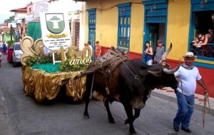

GENERALIDADES
Home
Registro
Personajes Ilustres

Fiestas:
Fiestas del Buey
Semana de la juventud
Fiestas patronales de Santa Ana
Semana ecológica
Fiesta regional de teatro
Sitios de interés:
Piedra de la Virgen
Casa Museo histórico Rafael Uribe Uribe